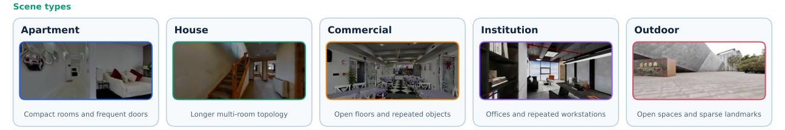
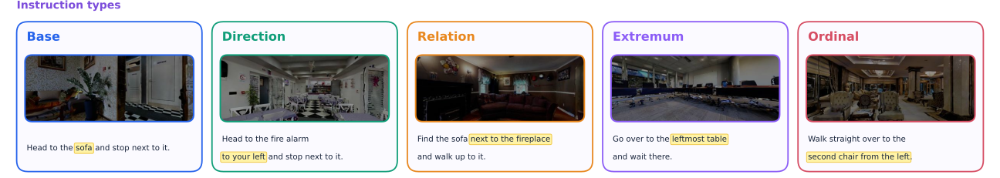

What it measures
Object-goal navigation benchmarks usually report one success rate. When a model fails, that number does not say whether it misunderstood the goal, missed a spatial relation, or simply could not navigate the scene.
INSIGHT-Bench separates those factors. Every episode carries two labels, fixed when it is built, and together they turn one success rate into a diagnosis.


Scene class is functional layout, independent of the source dataset: compact rooms with frequent
doors (Apartment), longer multi-room topologies (House), open floor plans with repeated instances (Commercial),
corridors and repeated workspaces (Institution), open traversable regions with sparse landmarks (Outdoor).
Instruction type is the mechanism that resolves the goal: a uniquely nameable target
(Base), an egocentric bearing (Direction), a unique anchor object (Relation),
an argmin or argmax such as the nearest or leftmost (Extremum), a ranked instance of an ordered set
(Ordinal). Rows of the 5×5 breakdown expose sensitivity to layout, columns isolate the language
mechanism, and single cells expose the interaction the aggregate hides.
| Scene type | Scenes | Episodes | Base | Direction | Relation | Extremum | Ordinal |
|---|---|---|---|---|---|---|---|
| Apartment | 120 | 239 | 50 | 50 | 50 | 50 | 39 |
| House | 61 | 216 | 50 | 50 | 31 | 50 | 35 |
| Commercial | 10 | 195 | 42 | 40 | 30 | 50 | 33 |
| Institution | 11 | 219 | 50 | 49 | 32 | 50 | 38 |
| Outdoor | 8 | 228 | 45 | 50 | 50 | 50 | 33 |
| Total | 210 | 1,097 | 237 | 239 | 193 | 250 | 178 |
One protocol for every policy
Every policy is driven through the same deployment protocol. Nothing is per-model.
| Observation | forward-facing monocular RGB, 480×270 — no depth, no odometry, no panorama |
|---|---|
| Field of view | 120° horizontal |
| Camera height | 1.0 m |
| Action budget | 300 actions per episode |
| Success radius | 2.0 m indoor, 3.0 m outdoor |
| Success condition | stop inside the radius and the target lies inside the 120° field of view of the final frame |
| Metrics | SR, SPL, terminal NE |
Leaderboard
Success rate in percent, over the full 1,097-episode split. Bold is best in the column, underlined is second best, computed over every policy whether or not its column is showing. Click a column header to sort. The five scene-class columns are folded away by default — open them for the full eleven-column breakdown.
published is a number reported in the paper and not recomputed here.
verified was computed by this repository from an evidence pack that passed
insight-bench verify. A cell divides by the episodes of that type that were measurable; Avg. divides by
the whole 1,097-episode split. At most five episodes may fail to run before a submission is refused.
See guides/submission.md to add a
row.
Submission
A submission is a pull request, and it carries no scores. It points at an evidence pack, and CI reads the numbers out of the pack itself — so nothing on this table depends on a number anybody typed.
- Evaluate all 1,097 episodes. Every
scripts/eval_*.shbuilds the evidence pack and prints the zip. How to install the harness and run a model is in the repository README; the episodes are on the Hub asLightOriginsHQ/light-insight-bench. - Check it locally:
insight-bench verify runs/<run>/evidence-pack.zipmust exit0. That is the same check CI repeats, on the same bytes. - Host the pack somewhere public and stable — a Hugging Face repository, a GitHub release
asset, Zenodo. It must be fetchable over
httpswithout a login, and it must stay there: the pack is the evidence for the row. - Open a pull request adding one file,
submissions/<your-method>.json:
{
"method": "Your-Model",
"code": "https://github.com/you/your-model",
"weights": "https://huggingface.co/you/your-model",
"provenance": "evidence-pack",
"evidence": {
"url": "https://.../evidence-pack.zip",
"sha256": "<the digest of that file>"
}
}CI then fetches the pack, refuses it unless the digest matches what you declared, runs verify, checks
the run is insight-bench-v1@1.0.0 over all 1,097 episodes, scores it, and prints the row it earns. At
most five episodes may fail to evaluate — an unevaluated episode leaves its denominator, so a larger allowance
would let dropping the hard ones buy a score. Green means a maintainer can merge without re-running anything, and
merging rebuilds this table.
The full contract — every refusal CI applies, how each cell is computed, and what this board does and does not prove — is in guides/submission.md. Rows marked published are transcribed from their papers and carry no pack, which is why they are marked differently from a verified run.
Citation
@misc{lightnav0,
title = {LightNav-0: Eliciting VLM Spatial Intelligence for Generalist Embodied Navigation},
author = {Light Origins Team},
year = {2026},
eprint = {2608.30935},
archivePrefix = {arXiv},
url = {https://arxiv.org/abs/2608.30935}
}